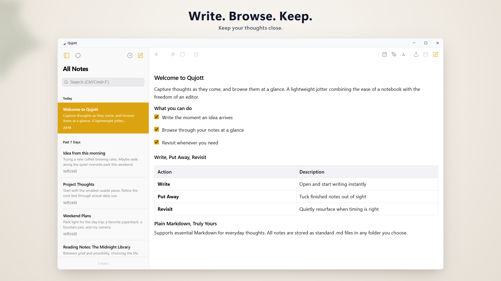
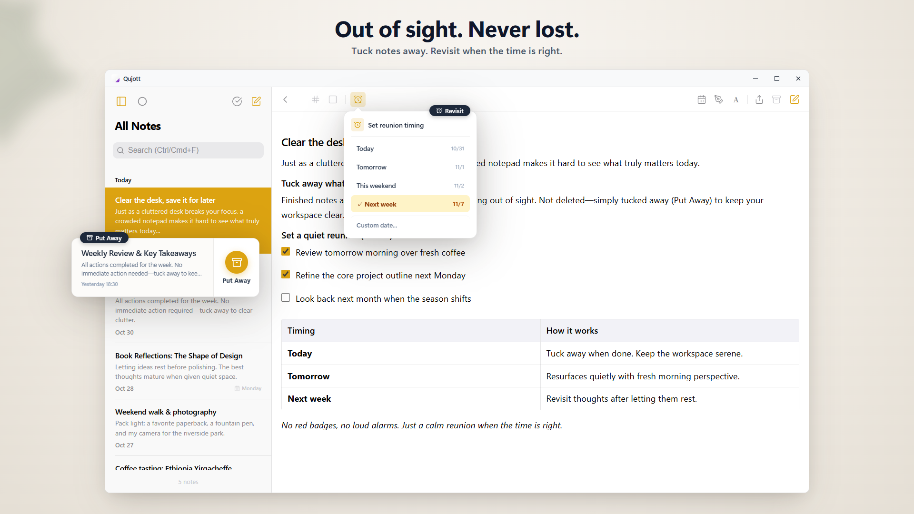
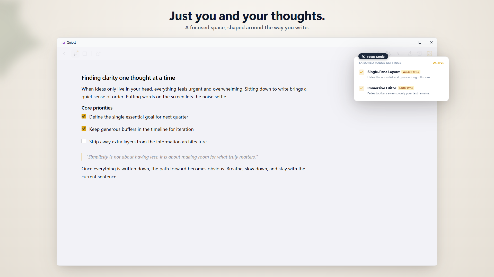
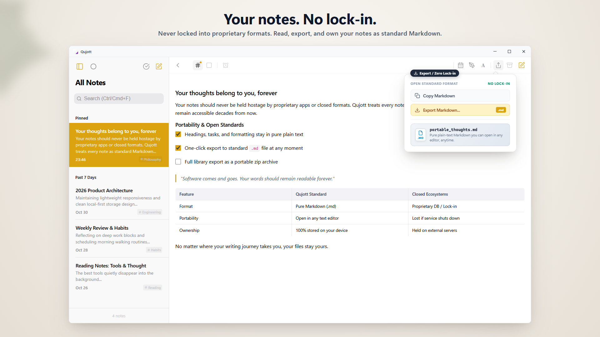
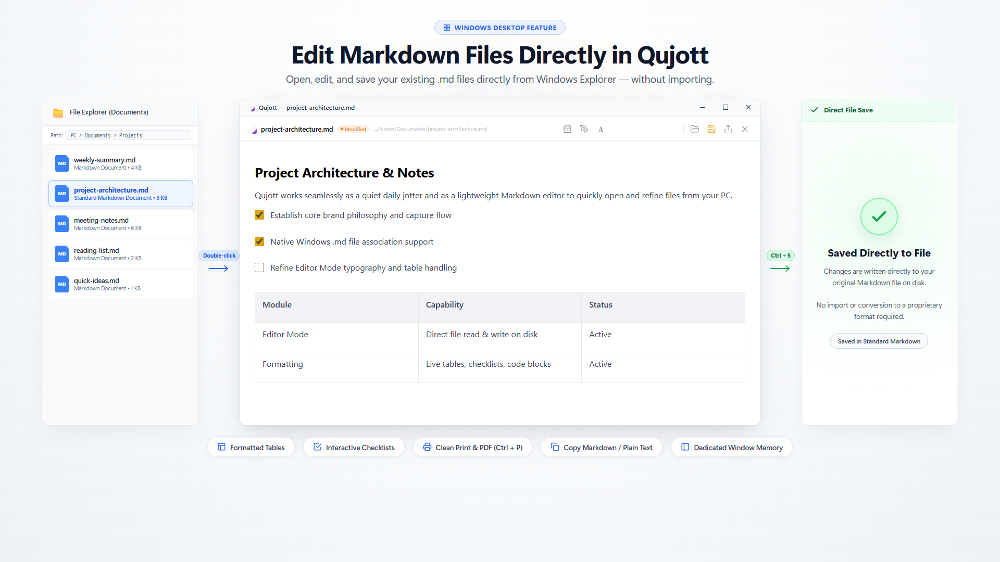
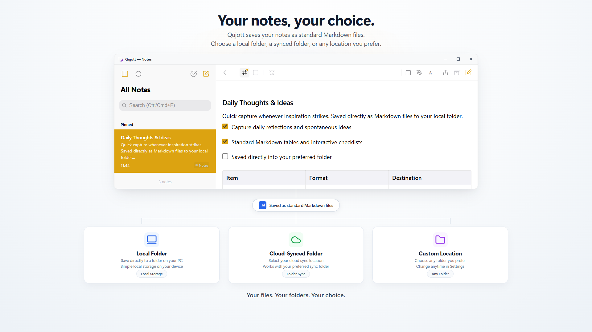
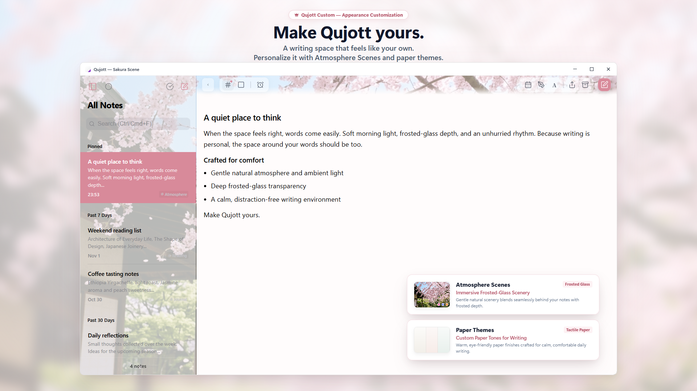

Qujott
Capture your thoughts with ease,
and revisit them whenever you like.
Qujott combines the simplicity and readability of a notepad with the freedom and versatility of a text editor—all in a lightweight digital notebook.
Organize later. Keep your thoughts close.
Supports standard Markdown. Save and edit your notes as plain text files, wherever you choose.

A clean two-pane space keeping your thoughts and note list effortlessly in view
Like a paper notepad resting beside your desk.
Qujott is not an overwhelming database or a complicated task management system.
Like a paper notepad resting beside your keyboard, it is designed for one thing: letting you start writing the instant a thought arrives.
No upfront folder hierarchies. No mandatory tagging.
Jot down what is on your mind and keep it close. You can browse and organize at your own pace.
Gently tuck notes away, and meet them again when ready.
Done with a note? Gently tuck it away without deleting it to keep your desk clear.
Use Revisit to let notes quietly resurface today, tomorrow, or next week. No intrusive alarms—just a natural reunion when the timing is right.

Put away notes to keep focus, and revisit them when the timing is right
Immerse completely in your writing.
Switch to a single-pane Focus Mode to eliminate sidebars and distractions.
A quiet, distraction-free environment built purely to let you think and type freely.

Focus Mode strips away all clutter so you can immerse in your words
Your words belong to you.
All notes in Qujott are saved as standard Markdown (.md) files.
No proprietary database lock-in. You can open, edit, export, and back them up anytime in any text editor.

All notes are saved as standard Markdown (.md). Completely free to read, move, and edit
Open and edit existing Markdown files directly.
Open existing Markdown files directly in Qujott, edit them, and save changes back to the original file.
No import or format conversion is needed. Use Qujott as your lightweight, everyday Markdown editor.

Open and edit existing Markdown files directly in Qujott and save in-place (Editor Mode)
Choose where your notes live.
Your notes are saved in the folder you choose on your PC—local folders, cloud-synced folders, or external drives.
You can use Qujott without creating or signing in to a cloud account.

Choose any local folder, cloud-synced folder, or external drive as your note storage
Make your writing space your own.
Personalize your environment with immersive Atmosphere Scenes (such as Sakura), frosted glass depth, and paper-inspired themes (Qujott Pro one-time purchase).
With UI display scaling (80% to 160%), customize your workspace for optimal comfort on any screen.

A writing space that feels like your own. Personalize it with Atmosphere Scenes and custom display scaling.